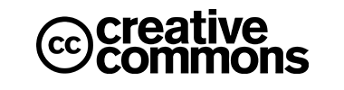
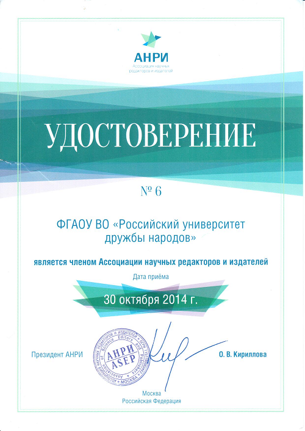

- Aims and Scope
- Sections
- Peer Review Process
- Open Access Policy
- Indexing
- Publishing Ethics
- Publication Fee
- Journal Archiving
Aims and Scope
RUDN Journal of Agronomy and Animal Industries is an peer-reviewed periodical covering the latest research in the field of Agricultural Sciences. The journal is international with regard to its editorial board, contributing authors and thematic foci of the publications reflecting problems of various regions in the world.
Publishing mission - to make the results of scientific researches of Russian scientists available for foreign academics and to familiarize the Russian scientific community with relevant research in foreign countries and to present the scientific achievements of scientists from various regions of the world. Particular attention is paid to the problems of agriculture and animal husbandry in regions with difficult climatic and other natural conditions.
The journal publishes original results of Russian and foreign scientific researchers and welcomes research articles, review articles, scientific reports, and bibliographic researches. The journal also publishes and disseminates the results of fundamental and applied research conducted by international collaborations of scientists on the priority problems of the agricultural sector.
The most common topics include Agronomy, Animal industries, Veterinary, Veterinary-sanitary expertise, Land use planning and cadaster, Landscape architecture.
The editors are open to thematic issue initiatives with guest editors.
Submitted papers are evaluated by independent reviewers and the Editorial Board members specialized in the article field. All materials must comply with the ethical standards of scientific publications.
The editorial board accepts for consideration original articles in English or Russian. By agreement with the editorial board, the article may be published in two languages at the same time.
In order to expand our readership, we present our journal at scientific conferences, including the annual international conference “Innovation Processess in Agriculture”, which is traditionally held at the base of the Agrarian Technological Institute of RUDN University. Each year the conference attracts many agrarian specialists from different parts of the world and continents: Europe, Asia, Africa, North and South America.
The journal does not publish conference reports. Authors can significantly expand unpublished reports, supplement them with new original results and process them into full research articles, prepare according to the rules of the journal and propose for consideration to the editorial board.
The journal does not publish conference reports. Authors can significantly expand unpublished reports, supplement them with new original results and process them into full research articles, prepare according to the rules of the journal and propose for consideration to the editorial board.
Sections
Botany
| Open Submissions | Indexed | Peer Reviewed |
Morphology and biochemistry of plants
| Open Submissions | Indexed | Peer Reviewed |
Crop production
| Open Submissions | Indexed | Peer Reviewed |
Genetics and plant breeding
| Open Submissions | Indexed | Peer Reviewed |
Plant protection
| Open Submissions | Indexed | Peer Reviewed |
Agronomy and geoponics
| Open Submissions | Indexed | Peer Reviewed |
Soil science and agrochemistry
| Open Submissions | Indexed | Peer Reviewed |
Agricultural technologies and land reclamation
| Open Submissions | Indexed | Peer Reviewed |
Reclamation and melioration
| Open Submissions | Indexed | Peer Reviewed |
Land management
| Open Submissions | Indexed | Peer Reviewed |
Landscaping of settlements
| Open Submissions | Indexed | Peer Reviewed |
Landscape architecture and design
| Open Submissions | Indexed | Peer Reviewed |
Protective afforestation
| Open Submissions | Indexed | Peer Reviewed |
Morphology and ontogenesis of animals
| Open Submissions | Indexed | Peer Reviewed |
Animal breeding
| Open Submissions | Indexed | Peer Reviewed |
Genetics and selection of animals
| Open Submissions | Indexed | Peer Reviewed |
Veterinary science
| Open Submissions | Indexed | Peer Reviewed |
Veterinary sanitary inspection
| Open Submissions | Indexed | Peer Reviewed |
Agricultural economy
| Open Submissions | Indexed | Peer Reviewed |
Risk management in agriculture
| Open Submissions | Indexed | Peer Reviewed |
Management and development of agro-industrial complex
| Open Submissions | Indexed | Peer Reviewed |
Science of the Institute
| Open Submissions | Indexed | Peer Reviewed |
Jubilee of the University
Peer Review Process
The editorial board has the right to reject texts at the stage of pre-review; articles rejected by the editors at the pre-review stage are not subject to further consideration, the editors do not provide expert opinions on them to the author.
A double-blind peer review method is mandatory for the processing of all scientific manuscripts submitted to the editorial staff of the journal and not rejected at the stage of pre-reviewing. This implies that neither the reviewer is aware of the authorship of the manuscript, nor the author maintains any contact with the reviewer.
- Members of the editorial board and leading global experts in corresponding areas of sciences invited as independent readers, perform peer reviews. Editor-in-chief, deputy editor-in-chief or science editor choose readers for peer review. We aim to limit the review process to 2-4 weeks, though in some cases the schedule may be adjusted at the reviewer’s request.
- Reviewer has an option to abnegate the assessment should any conflict of interests arise that may affect perception or interpretation of the manuscript. Upon the scrutiny, the reviewer is expected to present the editorial board with one of the following recommendations:
- If the reviewer has recommended any refinements, the editorial staff would suggest the author either to implement the corrections or to dispute them reasonably. Authors are kindly required to limit their revision to 3 months and resubmit the adapted manuscript within this period for final evaluation.
- We politely request that the editor be notified verbally or in writing should the author decide to refuse from publishing the manuscript. In case the author fails to do so within 3 months since receiving a copy of the initial review, the editorial board takes the manuscript off the register and notifies the author accordingly.
- If the author and reviewers meet insoluble contradictions regarding revision of the manuscript, the editor-in-chief resolves the conflict by his own authority.
- The editorial board reaches a final decision to reject a manuscript on the hearing according to reviewers’ recommendations, and duly notifies the authors of their decision via e-mail. The board does not accept previously rejected manuscripts for re-evaluation.
- Upon the decision to accept the manuscript for publishing, the editorial staff notifies the authors of the scheduled date of publication.
- Kindly note that a positive review does not guarantee acceptance, as the final decision in all cases lies with the editorial board. By his authority, the editor-in-chief rules the final solution of every conflict.
- Original reviews of submitted manuscripts remain deposited permanently (not less than 5 years).
- Manuscript reviews are not published. Reviews can be sent to the Ministry of Education and Science of the Russian Federation in case of query.
Open Access Policy
This journal provides immediate open access to its content on the principle that makes research freely available to the public support as greater global exchange of knowledge (open license Creative Commons Attribution International 4.0 CC-BY).
This journal is an open access journal. All articles are made freely available to readers immediately upon publication. Our open access policy is in accordance with the Budapest Open Access Initiative (BOAI) definition - it means that articles have free availability on the public internet, permitting any users to read, download, copy, distribute, print, search, or link to the full texts of these articles, crawl them for indexing, pass them as data to software, or use them for any other lawful purpose, without financial, legal, or technical barriers other than those inseparable from gaining access to the internet itself. For more information please read BOAI statement.
Creative Commons Attribution International 4.0 CC-BY.


Creative Commons Attribution 4.0 International Public License
By exercising the Licensed Rights (defined below), You accept and agree to be bound by the terms and conditions of this Creative Commons Attribution 4.0 International Public License ("Public License"). To the extent, this Public License may be interpreted as a contract, You are granted the Licensed Rights in consideration of Your acceptance of these terms and conditions, and the Licensor grants You such rights in consideration of benefits the Licensor receives from making the Licensed Material available under these terms and conditions.
Section 1 – Definitions.
- Adapted Materialmeans material subject to Copyright and Similar Rights that is derived from or based upon the Licensed Material and in which the Licensed Material is translated, altered, arranged, transformed, or otherwise modified in a manner requiring permission under the Copyright and Similar Rights held by the Licensor. For purposes of this Public License, where the Licensed Material is a musical work, performance, or sound recording, Adapted Material is always produced where the Licensed Material is synched in timed relation with a moving image.
- Adapter's License means the license You apply to Your Copyright and Similar Rights in Your contributions to Adapted Material in accordance with the terms and conditions of this Public License.
- Copyright and Similar Rights means copyright and/or similar rights closely related to copyright including, without limitation, performance, broadcast, sound recording, and Sui Generis Database Rights, without regard to how the rights are labeled or categorized. For purposes of this Public License, the rights specified in Section 2(b)(1)-(2) are not Copyright and Similar Rights.
- Effective Technological Measuresmeans those measures that, in the absence of proper authority, may not be circumvented under laws fulfilling obligations under Article 11 of the WIPO Copyright Treaty adopted on December 20, 1996, and/or similar international agreements.
- Exceptions and Limitationsmeans fair use, fair dealing, and/or any other exception or limitation to Copyright and Similar Rights that applies to Your use of the Licensed Material.
- Licensed Materialmeans the artistic or literary work, database, or other material to which the Licensor applied this Public License.
- Licensed Rights means the rights granted to Your subject following the terms and conditions of this Public License, which are limited to all Copyright and Similar Rights that apply to Your use of the Licensed Material and that the Licensor has authority to license.
- Licensormeans the individual(s) or entity(ies) granting rights under this Public License.
- Share means to provide material to the public by any means or process that requires permission under the Licensed Rights, such as reproduction, public display , public performance, distribution, dissemination, communication, or importation, and to make material available to the public including in ways that members of the public may access the material from a place and at a time individually chosen by them.
- Sui Generis Database Rightsmeans rights other than copyright resulting from Directive 96/9/EC of the European Parliament and of the Council of 11 March 1996 on the legal protection of databases, as amended and/or succeeded, as well as other essentially equivalent rights anywhere in the world.
- You means the individual or entity exercising the Licensed Rights under this Public License. Your has a corresponding meaning.
Section 2 – Scope.
-
License grant
.
- reproduce and Share the Licensed Material, in whole or in part; and
- produce, reproduce, and Share Adapted Material.
- Offer from the Licensor – Licensed Material. Every recipient of the Licensed Material automatically receives an offer from the Licensor to exercise the Licensed Rights under the terms and conditions of this Public License.
- No downstream restrictions. You may not offer or impose any additional or different terms or conditions on, or apply any Effective Technological Measures to, the Licensed Material if doing so, restricts exercise of the Licensed Rights by any recipient of the Licensed Material.
- Subject to the terms and conditions of this Public License, the Licensor hereby grants You a worldwide, royalty-free, non-sublicensable, non-exclusive, irrevocable license to exercise the Licensed Rights in the Licensed Material to:
- Exceptions and Limitations. For the avoidance of doubt, where Exceptions and Limitations apply to Your use, this Public License does not apply, and You do not need to comply with its terms and conditions.
- Term. The term of this Public License is specified in Section 6(a).
- Media and formats; technical modifications allowed. The Licensor authorizes You to exercise the Licensed Rights in all media and formats whether now known or hereafter created, and to make technical modifications necessary to do so. The Licensor waives and/or agrees not to assert any right or authority to forbid You from making technical modifications necessary to exercise the Licensed Rights, including technical modifications necessary ircumvent Effective Technological Measures. For purposes of this Public License , simply making modifications authorized by this Section 2(a)(4) never produces Adapted Material.
- Downstream recipients.
- No endorsement. Nothing in this Public License constitutes or may be construed as permission to assert or imply that You are, or that Your use of the Licensed Material is, connected with, or sponsored, endorsed, or granted official status by, the Licensor or others designated to receive attribution as provided in Section 3(a)(1)(A)(i).
- Other rights.
- Moral rights, such as the right of integrity, are not licensed under this Public License, nor are publicity, privacy, and/or other similar personality rights; however, to the extent possible, the Licensor waives and/or agrees not to assert any such rights held by the Licensor to the limited extent necessary to allow You to exercise the Licensed Rights, but not otherwise.
- Patent and trademark rights are not licensed under this Public License.
- To the extent possible, the Licensor waives any right to collect royalties from You for the exercise of the Licensed Rights, whether directly or through a collecting society under any voluntary or waivable statutory or compulsory licensing scheme. In all other cases the Licensor expressly reserves any right to collect such royalties.
Section 3 – License Conditions
Your exercise of the Licensed Rights is expressly made subject to the following conditions.
- Attribution.
- retain the following if it is supplied by the Licensor with the Licensed Material:
- identification of the creator(s) of the Licensed Material and any other designated to receive attribution, in any reasonable manner requested by the Licensor (including by pseudonym if designated);
- a copyright notice;
- a notice that refers to this Public License;
- a notice that refers to the disclaimer of warranties;
- a URI or hyperlink to the Licensed Material to the extent reasonably practicable;
- indicate if You modified the Licensed Material and retain an indication of any previous modifications; and
- indicate the Licensed Material is licensed under this Public License, and include the text of, or the URI or hyperlink to, this Public License.
- If You Share the Licensed Material (including in modified form), You must:
- You may satisfy the conditions in Section 3(a)(1) in any reasonable manner based on the medium, means, and context in which You Share the Licensed Material. For example, it may be reasonable to satisfy the conditions by providing a URI or hyperlink to a resource that includes the required information.
- If requested by the Licensor, You must remove any of the information required by Section 3(a)(1)(A) to the extent reasonably practicable.
- If You Share Adapted Material You produce, the Adapter's License You apply must not prevent recipients of the Adapted Material from complying with this Public License.
Section 4 – Sui Generis Database Rights.
Where the Licensed Rights include Sui Generis Database Rights that apply to Your use of the Licensed Material:
- for the avoidance of doubt, Section 2(a)(1) grants You the right to extract, reuse, reproduce, and Share all or a substantial portion of the contents of the database;
- if You include all or a substantial portion of the database contents in a database in which You have Sui Generis Database Rights, then the database in which You have Sui Generis Database Rights (but not its individual contents) is Adapted Material; and
- You must comply with the conditions in Section 3(a) if You Share all or a substantial portion of the contents of the database.
For the avoidance of doubt, this Section 4 supplements and does not replace Your obligations under this Public License where the Licensed Rights include other Copyright and Similar Rights.
Section 5 – Disclaimer of Warranties and Limitation of Liability.
- Unless otherwise separately undertaken by the Licensor, to the extent possible, the Licensor offers the Licensed Material as-is and as-available, and makes no representations or warranties of any kind concerning the Licensed Material, whether express, implied, statutory , or other. This includes, without limitation, warranties of title, merchantability, fitness for a particular purpose, non-infringement, absence of latent or other defects, accuracy, or the presence or absence of errors, whether or not known or discoverable. Where disclaimers of warranties are not allowed in full or in part, this disclaimer may not apply to You.
- To the extent possible, in no event will the Licensor be liable to You on any legal theory (including, without limitation, negligence) or otherwise for any direct, special, indirect, incidental, consequential, punitive, exemplary, or other losses, costs, expenses, or damages arising out of this Public License or use of the Licensed Material, even if the Licensor has been advised of the possibility of such losses, costs, expenses, or damages. Where a limitation of liability is not allowed in full or in part, this limitation may not apply to You.
- The disclaimer of warranties and limitation of liability provided above shall be interpreted in a manner that, to the extent possible, most closely approximates an absolute disclaimer and waiver of all liability. b
- This Public License applies for the term of the Copyright and Similar Rights licensed here . However, if You fail to comply with this Public License, then Your rights under this Public License terminate automatically.
- Where Your right to use the Licensed Material has terminated under Section 6(a), it reinstates:
- automatically as of the date the violation is cured, provided it is cured within 30 days of Your discovery of the violation; or
- upon express reinstatement by the Licensor.
- For the avoidance of doubt, the Licensor may also offer the Licensed Material under separate terms or conditions or stop distributing the Licensed Material at any time; however, doing so will not terminate this Public License.
- Sections 1, 5, 6, 7, and 8 survive termination of this Public License.
- The Licensor shall not be bound by any additional or different terms or conditions communicated by You unless expressly agreed.
- Any arrangements, understandings, or agreements regarding the Licensed Material not stated herein are separate from and independent of the terms and conditions of this Public License.
- For the avoidance of doubt, this Public License does not, and shall not be interpreted to, reduce, limit, restrict, or impose conditions on any use of the Licensed Material that could lawfully be made without permission under this Public License.
- To the extent possible, if any provision of this Public License is deemed unenforceable, it shall be automatically reformed to the minimum extent necessary to make it enforceable. If the provision cannot be reformed, it shall be severed from this Public License without affecting the enforceability of the remaining terms and conditions.
- No term or condition of this Public License will be waived and no failure to comply consented to unless expressly agreed to by the Licensor.
- Nothing in this Public License constitutes or may be interpreted as a limitation upon, or waiver of, any privileges and immunities that apply to the Licensor or You, including from the legal processes of any jurisdiction or authority.
Section 6 – Term and Termination.
For the avoidance of doubt, this Section 6(b) does not affect any right the Licensor may have to seek remedies for Your violations of this Public License.
Section 7 – Other Terms and Conditions.
Section 8 – Interpretation.
Creative Commons is not a party to its public licenses. Notwithstanding, Creative Commons may elect to apply one
of its public licenses to material it publishes and in those instances will be considered the “Licensor.”
The text of the Creative Commons public licenses is dedicated to the public domain under the
CC0 Public Domain Dedication
Except for the limited purpose of indicating that material is shared under a Creative Commons public license or as otherwise permitted by the Creative Commons policies published at
creativecommons.org/policies
,Creative Commons does not authorize
the use of the trademark “Creative Commons” or any other trademark or logo of Creative Commons
without its prior written consent including, without limitation, in connection with any unauthorized
modifications to any of its public licenses or any other arrangements, understandings, or agreements
concerning use of licensed material. For the avoidance of doubt,
this paragraph does not form part of the public licenses.
Creative Commons may be contacted at
creativecommons.org.
---
The page is based on original materials from the <>reative Commons: https://creativecommons.org/licenses/by/4.0/legalcode
Indexing
Articles have been published in this journal are indexed by several systems:
Publishing Ethics
The journal's publisher, RUDN University, is a co-founder and a member of the Association of Scientific Editors and Publishers (ASEP), Russia, and supports the ASEP Declaration on the Ethical Principles of Scientific Publications https://rasep.ru/

The ethic policy of this journal is based on recomendations from international commettees:
 ICMJE, WAME, COPE, EASE, Council of Science Editors, ORI
ICMJE, WAME, COPE, EASE, Council of Science Editors, ORI

Editorial responsibilities
Editors have sole responsibility for acceptance or rejection of a manuscript. The manuscript may be rejected by the editor on the stage prior to peer-review for a solid reason (inappropriate topic for journal, clearly of poor scientific quality, the article was previously published elsewhere, essential contradiction to ethical principles of the Journal was detected). Editors should only accept a paper when reasonably certain. Editors should guarantee that the quality of the papers conforms to internationally accepted scientific and publication ethical guidelines. If there is conflict of interest of the editor with the author of the article, the article should be transmitted to another editor.
The editor transmits all the submitted manuscripts, which were not rejected according to the reasons stated below, for peer-review. The editor chooses the reviewers out of the most competent specialists on the topic of the article.
Editors should preserve anonymity of reviewers and should not tell the reviewers the names of the authors.
Editors should guarantee the quality of the papers and the integrity of the academic record and be willing to publish corrections, clarifications, retractions and apologies when needed.
Reporting standarts
Authors of reports of original research should present an accurate account of the work performed as well as an objective discussion of its significance. Underlying data should be represented accurately in the paper. A paper should contain sufficient detail and references to permit others to replicate the work. Fraudulent or knowingly inaccurate statements constitute unethical behavior and are unacceptable.
Review and professional publication articles should also be accurate and objective, and editorial opinion works should be clearly identified as such.
Advertising Policies
The editorial board adheres to ethical standards in its work and, above all, defending the right to editorial independence. Placement of promotional materials and sponsorship can not influence in any way on editorial decisions and editorial content. The journal does not publish materials to accompany the advertising and does not sell advertising for specific articles. Advertising and information materials is not mixed with the editorial content.
All decisions on advertising placement are only accepted by the publisher. The editors reserve the right not to accept advertising materials, placement does not meet the publication policy.
Data Access and Retention
Authors may be asked to provide the raw data in connection with a paper for editorial review, and should be prepared to provide public access to such data (consistent with the ALPSP-STM Statement on Data and Databases), if practicable, and should in any event be prepared to retain such data for a reasonable time after publication.
Originality and Plagiarism
Plagiarism takes many forms, from passing off another paper as the author(s) own paper, to copying or paraphrasing substantial parts of another(s) paper (without attribution), to claiming results from research conducted by others. Plagiarism in all its forms constitutes unethical publishing behavior and is unacceptable.
The Editorial Board considers the following to be the forms plagiarism:
The Editorial Board considers the following to be the forms of incorrect borrowing:
Only original works are acceptable for publication in journal. The journal does not allow any forms of plagiarism.
If the authors have used the work and/or words of others, that this has been appropriately cited or quoted.
The journal is using "ANTIPLAGIAT" software for plagiarism detection in all Russian-language manuscripts. The Google Scholar is used for English-language manuscripts. Papers will be rejected from any stage of the publication process (even if the article was published already) if plagiarism will be found.
Multiple, Redundant or Concurrent Publication
An author should not in general publish manuscripts describing essentially the same research in more than one journal or primary publication. Submitting the same manuscript to more than one journal concurrently constitutes unethical publishing behaviour and is unacceptable.
In general, an author should not submit for consideration in another journal a previously published paper. Publication of some kinds of articles (eg, clinical guidelines, translations) in more than one journal is sometimes justifiable, provided certain conditions are met. The authors and editors of the journals concerned must agree to the secondary publication, which must reflect the same data and interpretation of the primary document. The primary reference must be cited in the secondary publication.
Acknowledgement of Sources
Proper acknowledgment of the work of others must always be given. Authors should cite publications that have been influential in determining the nature of the reported work. Information obtained privately, as in conversation, correspondence, or discussion with third parties, must not be used or reported without explicit, written permission from the source. Information obtained in the course of confidential services, such as refereeing manuscripts or grant applications, must not be used without the explicit written permission of the author of the work involved in these services.
Authorship of the Paper
Authorship should be limited to those who have made a significant contribution to the conception, design, execution, or interpretation of the reported study. All those who have made significant contributions should be listed as co-authors. Where there are others who have participated in certain substantive aspects of the research project, they should be acknowledged or listed as contributors.
The corresponding author should ensure that all appropriate co-authors and no inappropriate co-authors are included on the paper, and that all co-authors have seen and approved the final version of the paper and have agreed to its submission for publication.
Hazards and Human or Animal Subjects
If the work involves chemicals, procedures or equipment that have any unusual hazards inherent in their use, the author must clearly identify these in the manuscript. If the work involves the use of animal or human subjects, the author should ensure that the manuscript contains a statement that all procedures were performed in compliance with relevant laws and institutional guidelines and that the appropriate institutional committee(s) have approved them. Authors should include a statement in the manuscript that informed consent was obtained for experimentation with human subjects. The privacy rights of human subjects must always be observed.
Statement of Human and Animal Rights
When reporting experiments on human subjects, authors should indicate whether the procedures followed were in accordance with the ethical standards of the responsible committee on human experimentation (institutional and national) and with the Helsinki Declaration of 1975, as revised in 2000 and 2008. If doubt exists whether the research was conducted in accordance with the Helsinki Declaration, the authors must explain the rationale for their approach, and demonstrate that the institutional review body explicitly approved the doubtful aspects of the study.
When reporting experiments on animals, authors should be asked to indicate whether the institutional and national guide for the care and use of laboratory animals was followed.
Disclosure and Conflicts of Interest
All authors should disclose in their manuscript any financial or other substantive conflict of interest that might be construed to influence the results or interpretation of their manuscript. All sources of financial support for the project should be disclosed.
Examples of potential conflicts of interest which should be disclosed include employment, consultancies, stock ownership, honoraria, paid expert testimony, patent applications/registrations, and grants or other funding. Potential conflicts of interest should be disclosed at the earliest stage possible.
Fundamental errors in published works
When an author discovers a significant error or inaccuracy in his/her own published work, it is the authors obligation to promptly notify the journal editor or publisher and cooperate with the editor to retract or correct the paper. If the editor or the publisher learn from a third party that a published work contains a significant error, it is the obligation of the author to promptly correct or retract the paper or provide evidence to the editor of the correctness of the original paper.
Editorial Policy for Corrections to Published Articles
If inaccuracies and factual errors are made in the article that do not require retraction of the article, the editorial carries out the procedure for publishing the corrections.
The purpose of corrections made to a scientific article after publication is to convey truthful, accurate information to the reader, help avoid illegal borrowing, and eliminate erroneous data.
Any necessary changes will be accompanied with a post-publication notice which will be permanently linked to the original article so that readers will be fully informed of any necessary changes. This can be in the form of a Correction notice, an Expression of Concern, a Retraction and in rare circumstances a Removal.
Authors should notify us as soon as possible if they find errors in their published article, especially errors that could affect the interpretation of data or reliability of information presented. It is the responsibility of the corresponding author to ensure consensus has been reached between all listed co-authors prior to putting forward any requests for corrections or retractions to an article.
Any minor errors will not be accompanied by a separate correction notice. Instead a footnote will be added to the article detailing to the reader that the article has been corrected. Minor errors do not impact the reliability of, or the reader’s understanding of, the scholarly content.
The reprint of the article with corrections is carried out simultaneously with the retraction of the previous publication in case of multiple typos, incorrect citation, incorrect wording, incorrect facts, the need for corrections to the team of authors and other cases where changes are required that affect the interpretation of the article and at the same time the scientific integrity of the article does not remain unchanged.
Reprint of the corrected article may be initiated by the author (s), readers or the editors of the journal.
The procedure for correcting errors when reprinting an article
- If the editorial board has received information about the need to make corrections from third parties, the editor or the Editor-in-Chief will politely send the authors a notification about the need to analyze the identified errors.
- After an analysis of the identified errors, the editorial representatives report the need to reprint the article with corrections to the author (s) to agree on the corrections.
- The printed issue of the journal publishes an error message indicating the number / year and pages of the issue with the article in which the error was made, a description of the error and text with the corrected error, and retractions of the previous version of the article containing errors.
It is also indicated on whose initiative the retraction and reprint procedure is carried out.
In the online version of the journal, an error message is posted on the site page and / or PDF file with the article.
Readers are given the opportunity to work with the revised version of the article by posting it on the site next to the previous retracted version, in which the retraction was noted.
4. Information about the corrections, retractions and republishing is transferred to the to the Russian Index of Science Citation (elibrary.ru) and other databases in which the journal is indexed.
Retraction guidelines
In some cases the Editorial Board may consider retracting a publication.
The reasons for retraction may be the following:
The published article has serious errors, which place its scientific value in question.
In such cases the Editor should initiate the revision, after which the article may be retracted. The Act on retraction is complied, which is signed by the editor-in-chief. The copy of the Act is being sent to the author of the article.
In this case the article is not physically withdrawn from the published edition and the file of the issue on web site. The Editorial Office publishes the notification on retraction of the article on the corresponding page of the issue content on the official site of the Journal. The Editorial Office should attentively consider issuing an expression of concern about the revealed problems in the published materials.
The Editorial Board considers it a responsibility of authors and reviewers to promptly inform about the missed mistakes and breaches revealed after the publication of the article.
You can see the List of retraction articles of this journal.
Privacy Statement
Information about the authors (surname, name, family name, affiliation, e-mail, contact number), which is provided by them for publication in the journal, is becoming available for indefinite range of persons, for which the authors give their permission by providing his article in the online system on the website of the journal.
The following data is published for the convenience of the authors with the aim of the full and correct account of publications and their citation by the corresponding bibliography companies and providing the possibility of contacting the authors and the scientific society.
Personal information provided by the authors in addition to the enumerated below include additional e-mails and phones. These will be used only for contacting the authors in the process of preparing the publication. The Editorial Board may not transmit this information to the third party, who can use in for some other purposes.
----
The page is based on original materials from the Elsevier: http://cdn.elsevier.com/promis_misc/ethicalguidelinesforauthors.pdf
Publication Fee
Publication process in this journal is free for all authors.
The journal charge no publication fees for authors - including those of peer-review management, manuscript processing, journal production, Open-Access, online hosting and archiving.
The journal asks no article processing charge in any forms.
Journal Archiving
Full-text electronic content of the journal is archived in the RUDN University institutional repository https://repository.rudn.ru/ru/ included in the NORA project - National Aggregator of Open Repositories https://openrepository.ru/ (search for articles from RUDN journals by link), and registered in the Directory of Open Access Repositories - OpenDOAR http://v2.sherpa.ac.uk/id/repository/4669
The information about all the articles published is archived in Russian Electronic Scientific Library (eLIBRARY.ru). The direct URL to the journal issues: http://elibrary.ru/contents.asp?titleid=25719. You can search through article metadata (title, author, keywords, abstract etc.) on eLIBRARY.ru. The URL to article’s full text is available on the article’s page on eLIBRARY.ru. The articles’ full texts are stored on the journal’s server and can be accessed through this page (http://journals.rudn.ru/agronomy/issue/archive) or from each article's individual page on eLIBRARY.ru.
Printed copies of the journal issues are transferred for permanent storage to the Russian Book Chamber - a branch of ITAR-TASS, the Russian State Library and other leading libraries of the Russian Federation.